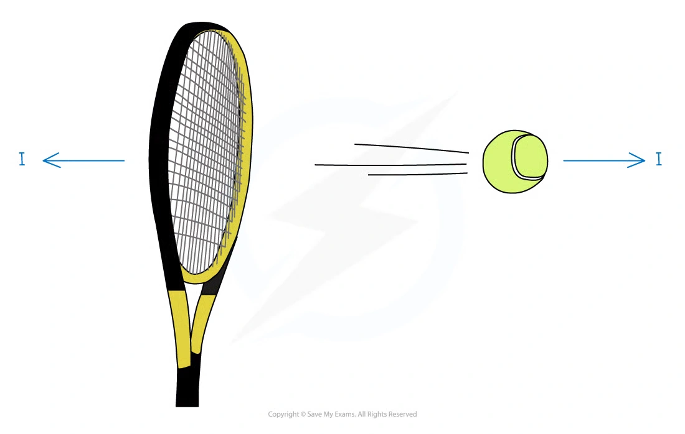
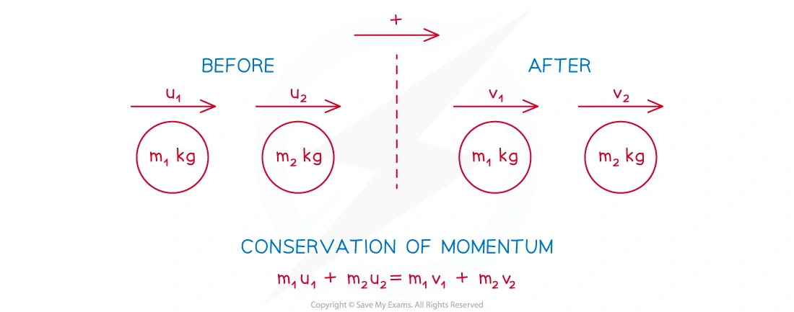

3. Momentum
Linear momentum · conservation · direct impact · coalescence
本页依据 9709 Mathematics 2026–2027 syllabus 4.3，覆盖：
- use the definition of linear momentum and show understanding of its vector nature；
- use conservation of linear momentum to solve one-dimensional direct-impact problems；
- direct impact of two bodies where the bodies coalesce on impact。
本考纲明确说明：只讨论一维运动；不要求 impulse 或 coefficient of restitution。
Learning objectives
1. Note knowledge points
Momentum and its vector nature
动量定义为质量与速度的乘积：
p=mv.
Momentum 是 vector quantity，方向与 velocity 相同；选定正方向后，反方向的 velocity 和 momentum 都写成负值。SI unit 为 \mathrm{kg\,m\,s^{-1}}，也可写成 \mathrm{N\,s}。

接触的两个物体之间的 interaction 遵守 Newton’s third law：两物体受到大小相等、方向相反的力。在没有外力的系统中，一个物体 momentum 的改变与另一个物体 momentum 的改变大小相等、方向相反。
Direct collisions
Direct collision 指两个物体沿同一直线运动并发生碰撞。碰撞前可以有一个物体静止、同向运动或相向运动；碰撞后可以有一个或两个物体静止、改变方向、同向运动，或 coalesce 成一个物体。Explosion 是相反过程：一个物体分成沿同一直线运动的两个物体。
Conservation of momentum
如果研究系统没有外部 resultant force，碰撞前后的总动量相等：
m_1u_1+m_2u_2=m_1v_1+m_2v_2.
解题时先选择 positive direction，再画 before/after diagram；未知方向可以先假设，若算出的 velocity 为负，就说明真实方向相反。若两个物体 coalesce，碰撞后速度相同：
m_1u_1+m_2u_2=(m_1+m_2)v.

Multiple collisions
多次碰撞必须逐次处理：第一次碰撞的 after-velocity 是下一次碰撞的 before-velocity。碰撞后检查物体的相对速度和位置，判断是否还会发生 second collision；如果撞墙，也要先把撞墙后的速度方向反转，再检查它是否追上其他物体。
2. Note worked examples
每个 Note worked example 单独成卡片，并保留其原始情境。
Worked example 1 · Basic momentum
A dog of mass 15\,\mathrm{kg} is running with speed 6\,\mathrm{m\,s^{-1}}. Find the momentum of the dog.
p=mv=15\times6=\boxed{90\,\mathrm{kg\,m\,s^{-1}}}.
Worked example 2 · Direct collision
Two particles P and Q, with masses 3\,\mathrm{kg} and 5\,\mathrm{kg} respectively, are travelling in opposite directions towards each other along the same straight line on a smooth horizontal table. Immediately before the collision the speeds of P and Q are 4\,\mathrm{m\,s^{-1}} and 2\,\mathrm{m\,s^{-1}} respectively. Immediately after the collision the direction of motion of P is reversed and its speed is 1\,\mathrm{m\,s^{-1}}. Find the speed and direction of motion of $Q immediately after the collision.
Take the initial direction of P as positive. Then
3(4)+5(-2)=3(-1)+5v,
so v=1\,\mathrm{m\,s^{-1}}. Therefore Q continues in its original direction with speed \boxed{1\,\mathrm{m\,s^{-1}}}.
Worked example 3 · Multiple collisions
Three uniform balls A, B and C of equal radius, and masses 0.1\,\mathrm{kg}, 0.2\,\mathrm{kg} and 0.3\,\mathrm{kg} respectively, can move along the same straight line on a smooth horizontal table, with B in the middle of A and C. A and B are projected towards each other in opposite directions with speeds 10\,\mathrm{m\,s^{-1}} and 2\,\mathrm{m\,s^{-1}} respectively while C is at rest. A and B collide directly, which does not change the direction of motion of A, and subsequently A moves with speed 1\,\mathrm{m\,s^{-1}}.
- The first collision gives
0.1(10)+0.2(-2)=0.1(1)+0.2v_B,
so \boxed{v_B=2.5\,\mathrm{m\,s^{-1}}}.
- At the subsequent B–C collision, if C leaves with speed 1.5\,\mathrm{m\,s^{-1}},
0.2(2.5)+0.3(0)=0.2u_B+0.3(1.5),
giving u_B=0.25\,\mathrm{m\,s^{-1}}. After the B–C collision, A is behind B but moving faster, so A catches B and there will be another collision between them.
3. Core knowledge
Linear momentum and its vector nature
For a particle of mass m moving with velocity v,
p=mv.
Momentum is a vector quantity. Choose one direction as positive and use signed velocities throughout. A particle moving in the opposite direction has negative momentum.
The SI unit is
\mathrm{kg\,m\,s^{-1}}.
Conservation of momentum
For a closed system with no external resultant force in the direction of motion,
\text{total momentum before impact} = \text{total momentum after impact}.
For two particles moving on one line,
m_1u_1+m_2u_2=m_1v_1+m_2v_2.
Use the velocities as signed quantities; do not replace them by speeds until the direction has been established.
Direct impact and coalescence
If two particles coalesce on impact, they have one common velocity v immediately afterwards:
m_1u_1+m_2u_2=(m_1+m_2)v.
For a chain of collisions, apply conservation of momentum separately to each collision, carrying the resulting velocity into the next stage.
Kinetic energy and loss in a collision
Momentum is conserved, but kinetic energy generally is not. The kinetic energy is
E_k=\frac12mv^2.
The loss of kinetic energy is
\text{loss}=E_{k,\,\text{before}}-E_{k,\,\text{after}}.
It is not necessary to assume conservation of kinetic energy unless the question explicitly gives that condition.
A reliable collision method
- Draw or describe the direction of motion before and after impact.
- Choose one positive direction.
- Write every momentum with its sign.
- Apply conservation of momentum to the relevant system.
- Use kinematics separately if the question asks for a later collision or a collision time.
- Check that the final direction agrees with the wording of the question.
4. Verified Paper 4 questions
Each card keeps the complete selected question, including all sub-questions and the original mark allocation. The wording is transcribed from the local question papers; it is not an invented practice question.
Question 1 · 9709/43/M/J/24 Q1
Two particles P and Q of masses 0.2\,\mathrm{kg} and 0.5\,\mathrm{kg} respectively are at rest on a smooth horizontal plane. Particle P is projected with a speed 6\,\mathrm{m\,s^{-1}} directly towards Q. After P and Q collide, P moves with a speed of 1\,\mathrm{m\,s^{-1}}.
Find the two possible speeds of Q after the collision. [3]
Show detailed mark scheme answer
Take the original direction of P as positive. Initial momentum is
0.2(6)=1.2.
If P continues in the original direction,
1.2=0.2(1)+0.5v_Q \quad\Rightarrow\quad v_Q=2.0.
If P reverses direction,
1.2=0.2(-1)+0.5v_Q \quad\Rightarrow\quad v_Q=2.8.
Therefore the two possible speeds are
\boxed{2.0\,\mathrm{m\,s^{-1}}\text{ and }2.8\,\mathrm{m\,s^{-1}}}.Question 2 · 9709/42/M/J/24 Q6(a–b)
Three particles A, B and C of masses 5\,\mathrm{kg}, 1\,\mathrm{kg} and 2\,\mathrm{kg} respectively lie at rest in that order on a straight smooth horizontal track XYZ. Initially A is at X, B is at Y and C is at Z. Particle A is projected towards B with a speed of 6\,\mathrm{m\,s^{-1}} and at the same instant C is projected towards B with a speed of v\,\mathrm{m\,s^{-1}}. In the subsequent motion, A collides and coalesces with B to form particle D. Particle D then collides and coalesces with C to form particle E and E moves towards Z.
Show that after the second collision the speed of E is \frac{15-v}{4}\,\mathrm{m\,s^{-1}}. [3]
The total loss of kinetic energy of the system due to the two collisions is 63\,\mathrm J. Use the result from (a) to show that v=3. [3]
Show detailed mark scheme answer
After the first collision, A and B coalesce. Their common velocity is
u_D=\frac{5(6)+1(0)}{5+1}=5\,\mathrm{m\,s^{-1}}
in the direction towards Z. Particle C has velocity -v in this direction. Thus after the second collision,
8u_E=6(5)+2(-v)=30-2v,
so
u_E=\boxed{\frac{15-v}{4}}.
The initial kinetic energy is
\frac12(5)(6^2)+\frac12(2)v^2=90+v^2.
The final kinetic energy is
\frac12(8)\left(\frac{15-v}{4}\right)^2=\frac{(15-v)^2}{4}.
Therefore
90+v^2-\frac{(15-v)^2}{4}=63.
This gives v^2+10v-39=0. Since v>0,
\boxed{v=3\,\mathrm{m\,s^{-1}}}.Question 3 · 9709/41/M/J/23 Q1(a–b)
Two particles P and Q, of masses m\,\mathrm{kg} and 0.3\,\mathrm{kg} respectively, are at rest on a smooth horizontal plane. P is projected at a speed of 5\,\mathrm{m\,s^{-1}} directly towards Q. After P and Q collide, P moves with a speed of 2\,\mathrm{m\,s^{-1}} in the same direction as it was originally moving.
- Find, in terms of m, the speed of Q after the collision. [2]
After this collision, Q moves directly towards a third particle R, of mass 0.6\,\mathrm{kg}, which is at rest on the plane. Q is brought to rest in the collision with R, and R begins to move with a speed of 1.5\,\mathrm{m\,s^{-1}}.
- Find the value of m. [2]
Show detailed mark scheme answer
- Conservation of momentum in the first collision gives
5m=2m+0.3v_Q,
so
v_Q=\boxed{10m\,\mathrm{m\,s^{-1}}}.
- In the second collision, Q stops and R moves at 1.5\,\mathrm{m\,s^{-1}}:
0.3(10m)=0.6(1.5).
Hence
\boxed{m=0.3\,\mathrm{kg}}.Question 4 · 9709/42/M/J/23 Q2(a–b)
Two particles A and B, of masses 3.2\,\mathrm{kg} and 2.4\,\mathrm{kg} respectively, lie on a smooth horizontal table. A moves towards B with a speed of v\,\mathrm{m\,s^{-1}} and collides with B, which is moving towards A with a speed of 6\,\mathrm{m\,s^{-1}}. In the collision the two particles come to rest.
Find the value of v. [2]
Find the loss of kinetic energy of the system due to the collision. [2]
Show detailed mark scheme answer
Take the direction of A as positive. Since both particles come to rest,
3.2v-2.4(6)=0,
so
\boxed{v=4.5\,\mathrm{m\,s^{-1}}}.
The final kinetic energy is zero. Therefore the loss is
\frac12(3.2)(4.5^2)+\frac12(2.4)(6^2) =32.4+43.2 =\boxed{75.6\,\mathrm J}.Question 5 · 9709/42/O/N/22 Q6(a–c)
Three particles A, B and C of masses 0.3\,\mathrm{kg}, 0.4\,\mathrm{kg} and m\,\mathrm{kg} respectively lie at rest in a straight line on a smooth horizontal plane. The distance between B and C is 2.1\,\mathrm m. A is projected directly towards B with speed 2\,\mathrm{m\,s^{-1}}. After A collides with B the speed of A is reduced to 0.6\,\mathrm{m\,s^{-1}}, still moving in the same direction.
- Show that the speed of B after the collision is 1.05\,\mathrm{m\,s^{-1}}. [2]
After the collision between A and B, B moves directly towards C. Particle B now collides with C. After this collision, the two particles coalesce and have a combined speed of 0.5\,\mathrm{m\,s^{-1}}.
Find m. [2]
Find the time that it takes, from the instant when B and C collide, until A collides with the combined particle. [5]
Show detailed mark scheme answer
0.3(2)=0.3(0.6)+0.4v_B,
so v_B=\boxed{1.05\,\mathrm{m\,s^{-1}}}.
0.4(1.05)=(0.4+m)(0.5),
so \boxed{m=0.44\,\mathrm{kg}}.
- B reaches C after
\frac{2.1}{1.05}=2\,\mathrm s.
In those 2 s, A travels 0.6(2)=1.2\,\mathrm m. At the instant of the second collision, A is therefore 1.2\,\mathrm m behind the combined particle. The combined particle travels at 0.5\,\mathrm{m\,s^{-1}}, while A travels at 0.6\,\mathrm{m\,s^{-1}}. Hence
t=\frac{1.2}{0.6-0.5}=\boxed{12\,\mathrm s}.Question 6 · 9709/41/M/J/21 Q3(a–b)
Three particles P, Q and R, of masses 0.1\,\mathrm{kg}, 0.2\,\mathrm{kg} and 0.5\,\mathrm{kg} respectively, are at rest in a straight line on a smooth horizontal plane. Particle P is projected towards Q at a speed of 5\,\mathrm{m\,s^{-1}}. After P and Q collide, P rebounds with speed 1\,\mathrm{m\,s^{-1}}.
- Find the speed of Q immediately after the collision with P. [3]
Q now collides with R. Immediately after the collision with Q, R begins to move with speed V\,\mathrm{m\,s^{-1}}.
- Given that there is no subsequent collision between P and Q, find the greatest possible value of V. [3]
Show detailed mark scheme answer
- Take the direction of the initial motion of P as positive:
0.1(5)=0.1(-1)+0.2v_Q.
Therefore v_Q=\boxed{3\,\mathrm{m\,s^{-1}}}.
- After the second collision, let the velocity of Q be w. Conservation of momentum for Q and R gives
0.2(3)=0.2w+0.5V,
so w=3-2.5V. For there to be no subsequent collision with P, Q must not move backwards towards P, so w\ge0. Hence
3-2.5V\ge0 \quad\Rightarrow\quad \boxed{V\le1.2\,\mathrm{m\,s^{-1}}}.
The greatest possible value is \boxed{1.2\,\mathrm{m\,s^{-1}}}.Question 7 · 9709/42/M/J/20 Q4(a–c)
Small smooth spheres A and B, of equal radii and of masses 4\,\mathrm{kg} and 2\,\mathrm{kg} respectively, lie on a smooth horizontal plane. Initially B is at rest and A is moving towards B with speed 10\,\mathrm{m\,s^{-1}}. After the spheres collide A continues to move in the same direction but with half the speed of B.
- Find the speed of B after the collision. [2]
A third small smooth sphere C, of mass 1\,\mathrm{kg} and with the same radius as A and B, is at rest on the plane. B now collides directly with C. After this collision B continues to move in the same direction but with one third the speed of C.
Show that there is another collision between A and B. [3]
A and B coalesce during this collision. Find the total loss of kinetic energy in the system due to the three collisions. [5]
Show detailed mark scheme answer
- Let the speed of A be x and that of B be 2x after the first collision:
4(10)=4x+2(2x),
so x=5 and v_B=\boxed{10\,\mathrm{m\,s^{-1}}}.
- Let the speeds of B and C after the second collision be y and 3y:
2(10)=2y+1(3y),
giving y=4. Thus after the second collision A has speed 5 and B has speed 4 in the same direction. Since A is behind B and is now faster, another collision occurs.
- Initial kinetic energy is 200\,\mathrm J. After the first collision it is
\frac12(4)(5^2)+\frac12(2)(10^2)=150\,\mathrm J.
After the second collision it is
\frac12(4)(5^2)+\frac12(2)(4^2)+\frac12(1)(12^2)=138\,\mathrm J.
Before the third collision the momentum of A and B is 4(5)+2(4)=28. Their common speed after coalescing is 28/6=14/3, so final kinetic energy is 196/3\,\mathrm J. Total loss:
200-\frac{196}{3}=\boxed{134.7\,\mathrm J}\quad\text{(3 s.f.)}.Question 8 · 9709/42/O/N/20 Q1(a–b)
Two particles P and Q, of masses 0.2\,\mathrm{kg} and 0.5\,\mathrm{kg} respectively, are at rest on a smooth horizontal plane. P is projected towards Q with speed 2\,\mathrm{m\,s^{-1}}.
Write down the momentum of P. [1]
After the collision P continues to move in the same direction with speed 0.3\,\mathrm{m\,s^{-1}}. Find the speed of Q after the collision. [2]
Show detailed mark scheme answer
p=mv=0.2(2)=\boxed{0.4\,\mathrm{kg\,m\,s^{-1}}}.
- Conservation of momentum gives
0.4=0.2(0.3)+0.5v_Q.
Hence
\boxed{v_Q=0.68\,\mathrm{m\,s^{-1}}}.Question 9 · 9709/41/M/J/20 Q1(a–b)
A particle B of mass 5\,\mathrm{kg} is at rest on a smooth horizontal table. A particle A of mass 2.5\,\mathrm{kg} moves on the table with a speed of 6\,\mathrm{m\,s^{-1}} and collides directly with B. In the collision the two particles coalesce.
Find the speed of the combined particle after the collision. [2]
Find the loss of kinetic energy of the system due to the collision. [3]
Show detailed mark scheme answer
2.5(6)=(2.5+5)v,
so \boxed{v=2\,\mathrm{m\,s^{-1}}}.
- Initial kinetic energy is \frac12(2.5)(6^2)=45\,\mathrm J. Final kinetic energy is \frac12(7.5)(2^2)=15\,\mathrm J. Therefore